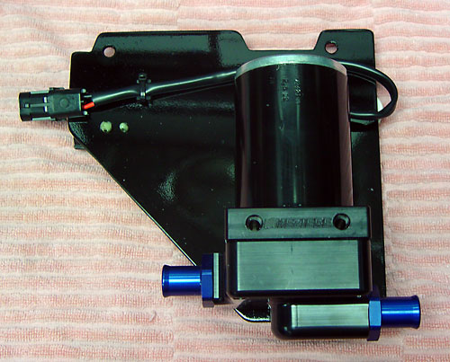
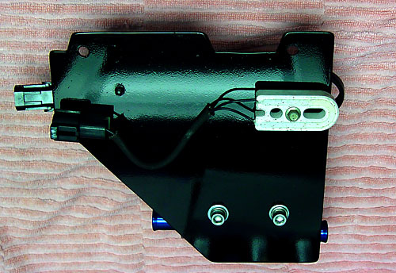
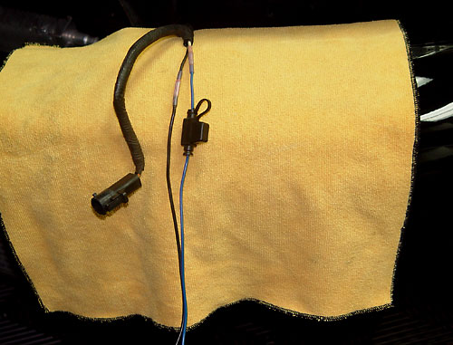
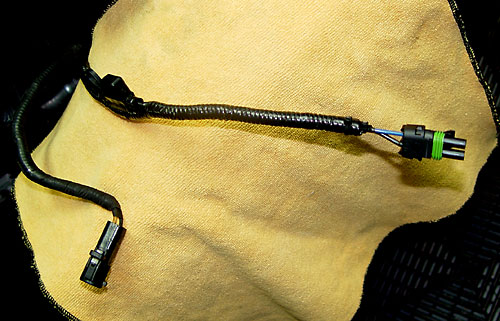
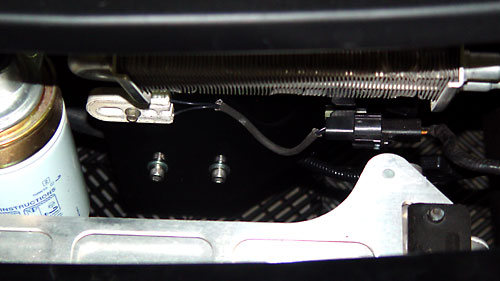
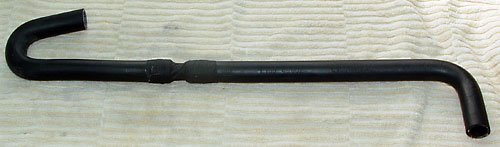
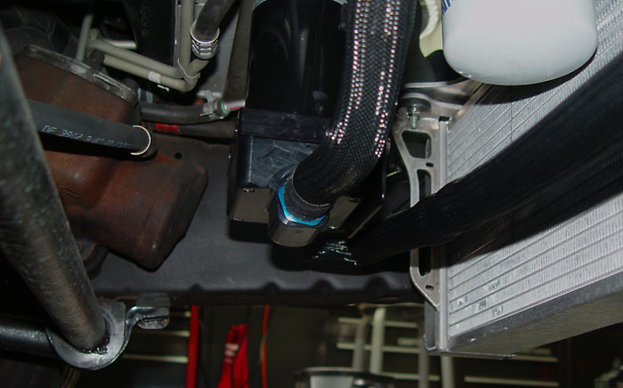
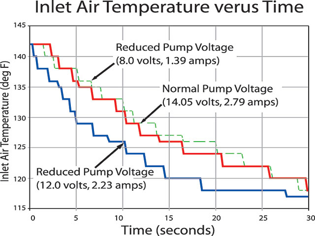

|
Mezeire Intercooler Pump |
| The Mezeire pump is a good fit, but you need to make a bracket. I cut this one from 1/8" aluminum, painted with epoxy. The cutouts are for the power steering cooler. My cooler is slightly repositioned, so make sure to mock it up with cardboard before cutting. |
| I just duplicated the holes in the stock bracket for the fuel pump resistor. Note that the resistor should be spaced out from the plate to provide airflow to the back of the resistor. The bolt is self-tapping, so just drill a slightly underside hole and thread it through with a t-handle nut driver. |
| The Meziere connector is different from stock, so you need to splice the harness. Make sure to use weatherproof (heat shrink) butt splices. The red ones (actually pink) are a perfect fit. |
| I slipped the harness into corrugated tubing, and then wrapped it up in electrical tape. |
| Here is the bracket in place. |
| Here is the pump-to-heat exchanger hose that I cobbled together from two heater hoses from Auto Zone: |
|
Here is the pump installed:
 |
|
Postscript: There is solid data showing that
the Mezeire pump cools better than the OEM Bosch pump, but there is
always a debate about whether longer dwell times would actually cool
better. When Googling for optimum air-to-water intercooler flow
rates, I came across this article with respect to testing a supercharged
Silverado SS:
We performed the second test on the highway but it was more demanding. When the intercooler air and the engine coolant temperature had reached a steady-state value, we stopped and did a 0-70 mph WOT blast. After we reached 70, we engaged the cruise control to maintain that speed. During this time and for several minutes following, we logged the intercooler temperature using AutoTap. We repeated this testing for various intercooler pump voltages in 0.5-volt steps from 7 volts to 14.05 volts (stock). The graph shows the inlet air temperature versus time for the normal pump voltage of 14.05 volts for our system's optimized pump measurement of 12 volts, and for a lower-than-optimal pump voltage of 8 volts. The data in this graph begins directly after our WOT blast and shows the next 30 seconds of data. You can see that running the pump at 12 volts (providing about a 30 percent lower flow rate than with 14.05 volts) results in faster cooling than at the normal 14.05 volts.  Running the pump at 14.05 volts (fast coolant flow rate) and 8 volts (slow coolant flow rate) took about 30 seconds to drop the air temperature 24 degrees. However, running the pump at 12 volts only required about 18 seconds to drop the same 24 degrees. To reduce the pump voltage to about 12 volts, we inserted a 1-ohm resistor in series with the one of the intercooler pump leads as shown in pump circuit schematic. When you decide on a mounting location, remember that this resistor will get warm. Our intercooler system uses two heat exchangers, and the hot coolant was first routed to the lower heat exchanger then to the upper heat exchanger. We used a coolant mixture of 25 percent antifreeze, 75 percent distilled water, and some Water Wetter. Your optimum pump voltage will depend on your particular setup. |
|
The pump is noisy as hell. I
installed a ballast resistor on the output side of the relay. Figuring 6.5 amps for the pump (Mezeire states that "under normal
use the pump will draw 6-7 amps"), to drop the voltage 5 volts, I
needed a .77 ohm resistor, with at least a 25 watt power rating (a
nifty dropping resistor calculator is
here).
So I used an MSD Ignition ballast resistor, a beefy .8 ohm ceramic
part rated at 200 watts. it works perfectly. The pump is
reasonably quiet now, and still flows way more than the stock pump.
I used the stock pump output to turn on both the pump and the SPAL controller. For the pump, I added a relay and a fuse. The stock wiring may be beefy enough, but with the Mezeire flowing four times more than stock, it made sense to use a relay. Photos of the reworked circuits are here. |